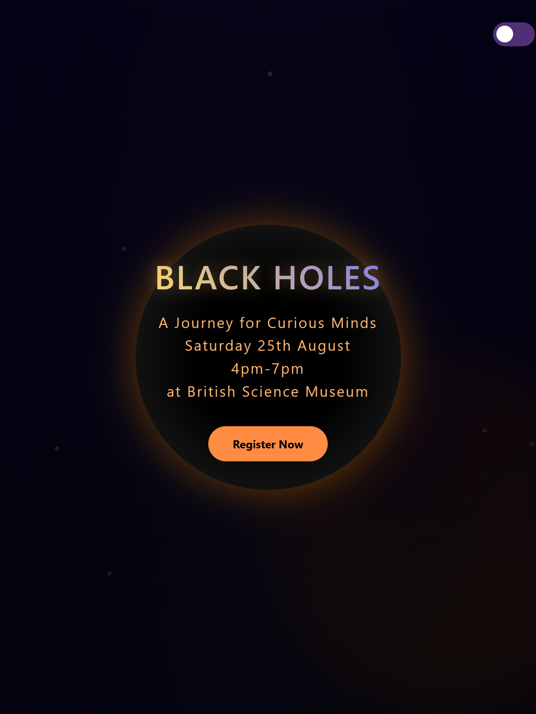
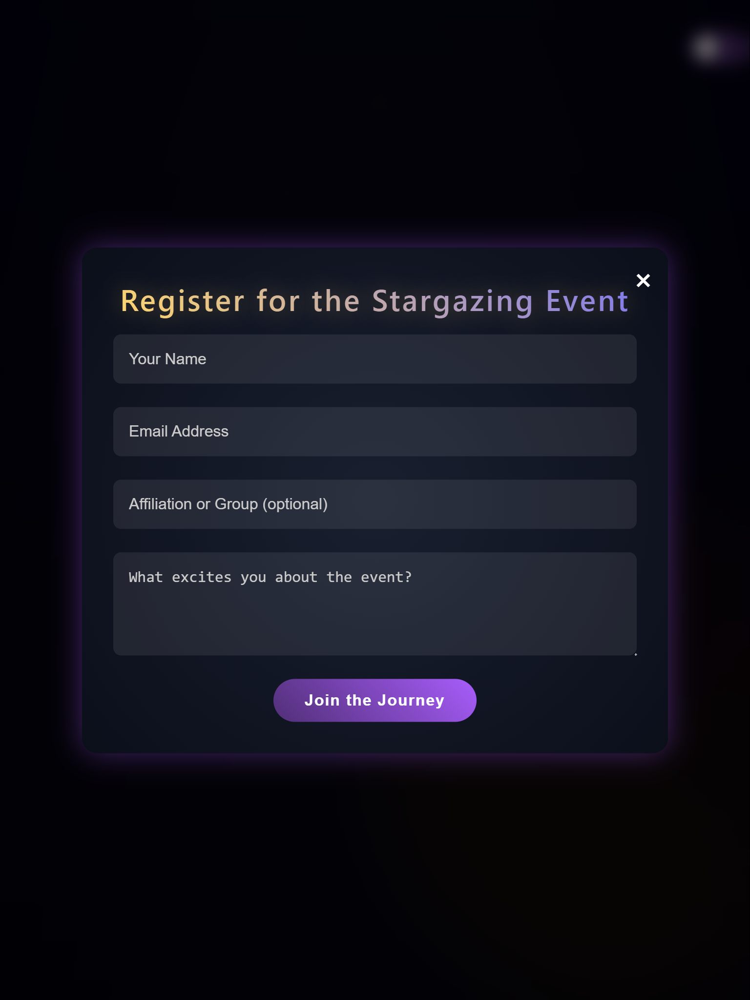
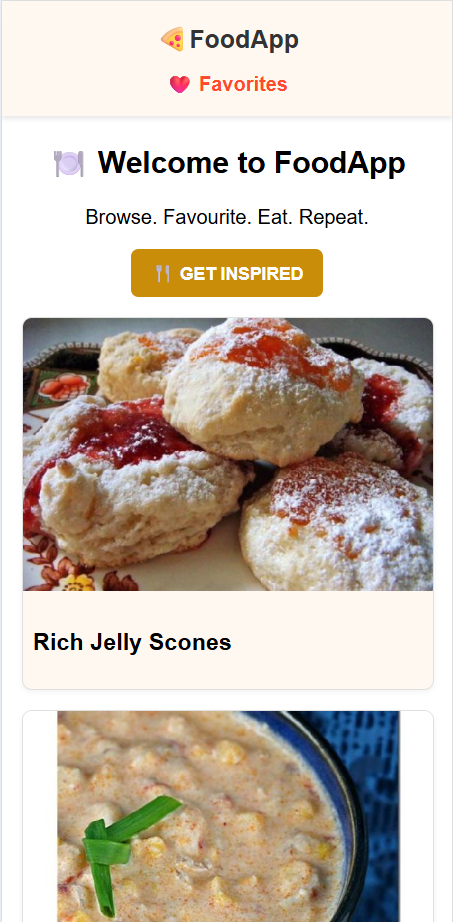
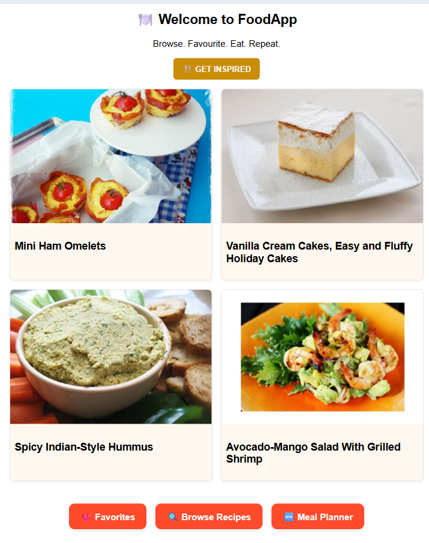
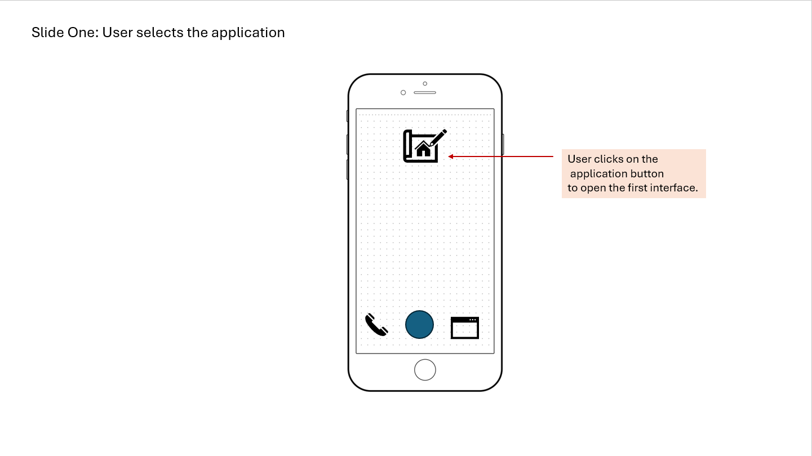

Cosmic Care
Wellness e-commerce website

Project Overview
Role
Full Stack Developer
Timeline
3 months
Responsibilities
UI engineering, front-end development, responsive layout, database integration, accessibility
Blending thoughtful digital experiences with smart technical solutions to turn challenges into possibilities
Projects that blend thoughtful UI, accessibility, and clean engineering. Each one reflects my approach to building intuitive, emotionally engaging digital experiences.
Wellness e-commerce website
Full Stack Developer
3 months
UI engineering, front-end development, responsive layout, database integration, accessibility
A closer look at how I approached the challenge, shaped the user experience, and built the final interface — from early ideas to polished execution.
I’ve always dreamed of creating my own wellness brand, so I decided to design it myself. Many e‑commerce platforms in the wellness space suffer from cluttered, confusing interfaces that overwhelm users instead of supporting them. They often lack emotional connection, and business owners tend to choose designs they personally like rather than what their customers actually need. The challenge was to create a calming, intuitive web experience that helps users feel supported, understood, and emotionally connected to the brand. My goal was to build trust through simplicity and warmth, while delivering an effortless and positive shopping experience.
I analyzed user feedback and identified the need for intuitive, easily interpretable wellness data with minimal cognitive load.
I chose deep blacks, purples, and subtle gradients to evoke the feeling of outer space. This palette creates contrast, draws focus to the central animation, and reinforces the theme of mystery and exploration.
The final product offers a tranquil, focused user experience. I deepened my knowledge of accessible design, refined my approach to state management with React hooks, and improved how I structure reusable UI components for scalability.
Landing Page

Front-end Developer
1 months
HTML, CSS, JavaScript, Animations
UI engineering, Front-end development, responsive layout
The London Museum of Science had just launched a thrilling new astronomy event and wanted a digital experience that felt as magical as the night sky itself. The museum needed a landing page that didn’t just inform people, but pulled them into the universe. Something immersive, atmospheric, and family‑friendly. A moment of wonder that would inspire visitors to subscribe to the event — and hopefully support the museum through optional donations. Their goal was to increase awareness, attract families, and encourage sign‑ups for the event.
Their existing website announcements weren’t capturing attention — visitors were scrolling past without feeling the excitement. Many museum landing pages rely on static banners or text‑heavy announcements, which fail to create emotional engagement. The museum wanted something more immersive — a visually striking, interactive experience that would spark curiosity and encourage visitors to explore further.
Before designing the landing page, I explored how museums and science institutions typically present special events online. Many rely on static banners, long text blocks, or generic hero images that fail to create emotional engagement. This helped me identify several key insights:


I implemented dynamic data handling with the wellness API, optimized component rendering, and ensured keyboard navigation and screen reader support across all interactive elements. Instead of a static banner, I used motion to create an immediate sense of immersion. The swirling black hole animation acts as a visual anchor, pulling users into the experience and encouraging them to scroll. This supports the museum’s goal of capturing attention quickly. Astronomy visuals can be intense, so I balanced the animation with a clean, uncluttered layout. Based on research, parents want quick clarity. I placed the event title, date, and “Free Entry” information prominently above the fold. This ensures families immediately understand the value of the event.
Building the swirling black‑hole effect required balancing visual quality with performance. I experimented with CSS animations, gradients, and layered transforms to achieve a sense of depth without relying on heavy video files or WebGL. The challenge was creating motion that felt fluid while keeping the page lightweight.
The final landing page successfully delivers an immersive, astronomy‑themed experience that captures users’ attention within the first few seconds. The dynamic black‑hole animation, combined with clear messaging and scroll‑triggered interactions, creates a sense of curiosity and excitement that aligns with the museum’s event. The design communicates key information quickly, making it easy for families to understand what the event is about and how to subscribe.
Web Application

Front-end Developer
1 months
React, JavaScript, Vite, Github
UI engineering, Front-end development, responsive layout
Busy families and professionals often struggle to cook healthy meals because they lack recipe ideas and don’t have time to plan meals from scratch. Many also have different dietary needs or want to exclude certain ingredients, which makes finding suitable recipes even more challenging. The goal of this project was to design a simple, intuitive recipe‑search experience that helps users quickly discover meals based on their preferences, dietary restrictions, and available ingredients — making healthy cooking easier and more accessible for everyone.
Many households have different dietary needs or want to exclude certain ingredients, which makes finding the right meal even more challenging. The problem was to create a simple, intuitive way for users to discover recipes that match their preferences, dietary restrictions, and available ingredients — helping them cook healthier meals with less effort and stress.
Before designing the Food Web App, I explored how people search for recipes and plan meals in their daily routines. I focused on the needs of busy families and professionals who want quick, healthy meal ideas without spending too much time searching or planning. This helped me identify several key insights:


The design of the Food Web App was shaped by the needs of busy families and professionals who want quick, healthy meal ideas without navigating overwhelming interfaces. Every decision focused on clarity, speed, and reducing cognitive load.
Building the swirling black‑hole effect required balancing visual quality with performance. I experimented with CSS animations, gradients, and layered transforms to achieve a sense of depth without relying on heavy video files or WebGL. The challenge was creating motion that felt fluid while keeping the page lightweight. Clean, Minimal Layout to Reduce Overwhelm,Search Bar for Fast Discovery, Ingredient‑Based Filtering for Real‑Life Convenience, Visual Recipe Cards for Quick Decision‑Making,
The Food Web App successfully delivers a simple, intuitive way for users to discover recipes that match their dietary needs, ingredient preferences, and available time. By combining a clean layout with powerful filtering options, the app helps busy families and professionals find healthy meal ideas quickly — without the clutter and overwhelm of traditional recipe websites.
User interaction and experiance design

Interaction designer Developer
6 months
Papper prototype, Power point
UI engineering
A small construction business needed a fast, reliable way to generate service quotes while working on the move. Manual calculations were slow and inconsistent, reducing client trust. This project explores a simple, mobile‑friendly solution that supports quick, transparent quoting during site visits.
The business owner manages all operations alone and has little time for manual calculations. Slow quoting leads to delays, inconsistent pricing, and lost client trust. A faster, more accurate solution was needed.
This project followed an iterative, user‑centred design approach: research → insights → prototype → feedback → refinement.
The design prioritises quick, simple actions because the business owner works on site...
The final prototype delivers a clear, mobile‑friendly quoting flow that supports fast, on‑site use. It simplifies the contractor’s process, reduces manual input, and provides a structured way to capture essential details. The project strengthened my ability to translate real‑world workflows into intuitive digital interactions and helped me refine my approach to designing simple, efficient mobile experiences.